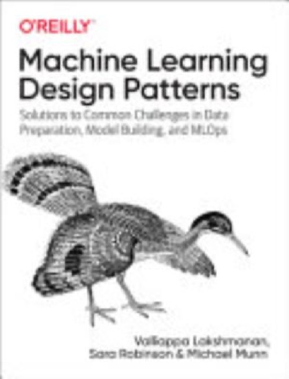

Writing / Book review
Machine Learning Design Patterns: A Shared Vocabulary for ML Engineering
Lakshmanan, Robinson, and Munn do for ML what the Gang of Four did for software, naming recurring problems and their solutions so teams can design and review ML systems faster.

- Book
- Machine Learning Design Patterns
- Author
- Valliappa Lakshmanan, Sara Robinson, Michael Munn
- Publisher
- O'Reilly Media, 2020
- ISBN
- 9781098115784
- Assessment
- ★★★★☆ 4/5
provisional, based on public materials
VerdictThe best book for turning tribal ML knowledge into a shared vocabulary. Its patterns make design reviews faster and junior engineers productive sooner.
The value of design patterns is not that they are novel solutions; experienced practitioners may recognize many of them. The value is the names and the compact way to discuss recurring trade-offs. A team can ask whether a workload needs a Cascade, a Transform, or a Repeatable Split, then debate whether the pattern fits. This book catalogs 30 machine-learning design patterns and offers a vocabulary for that kind of review. A name is a prompt for design discussion, not a command to apply a pattern automatically.
The pattern catalog, at a glance
The patterns I use most
Reframing
Turn a regression problem into classification, or the reverse, when it better matches the real decision. Predicting "rain amount" might be better served as buckets, which give you uncertainty for free.
Cascade
A Cascade can route common and exceptional cases differently, but a gate creates its own failure mode: errors near the boundary can send an example down the wrong path. The pattern is useful when the branches have meaningfully different requirements and the routing decision can be evaluated. It is not a universal model for any classifier with multiple stages.
Transform
Repeatable Splitting
Split by hashing a stable key, such as user ID or date, rather than randomly. Splits are reproducible, and related records cannot leak across train and test.
pythonimport hashlib
def split_of(key: str, test_pct=10) -> str:
bucket = int(hashlib.md5(key.encode()).hexdigest(), 16) % 100
return "test" if bucket < test_pct else "train"
Two-Phase Predictions
Limitations
- Examples lean heavily on Google Cloud. The patterns are portable, but the code is not.
- Published in 2020, so LLM-era patterns (RAG, tool use, guardrails, LLM-as-judge) are absent. A second edition would be welcome.
The patterns with the highest return
| Pattern | Fixes | Return on adoption |
|---|---|---|
| Transform | Training-serving skew | Highest: prevents a whole bug class |
| Repeatable Splitting | Leakage and irreproducible evals | High, and nearly free |
| Cascade | Rare-case handling, cost | High for routing workloads |
| Neutral Class | Forced choices on ambiguous inputs | Medium, underused |
| Two-Phase Predictions | On-device cost and latency | High where edge devices are involved |
Scope and review basis
This review summarizes the public publisher description and table of contents for Machine Learning Design Patterns: Solutions to Common Challenges in Data Preparation, Model Building, and MLOps, by Valliappa Lakshmanan, Sara Robinson, and Michael Munn. O'Reilly published it in 2020. The catalog identifies 30 patterns. Pattern names below are attributed to the authors; the explanations are concise paraphrases, not quotations. This is an assessment of the publicly verifiable scope, not a claim to have personally read the full book or tested every code example.
The book's central format is practical: name a recurring design problem, describe an approach, and make the trade-offs easier to discuss. That is valuable in a field where systems often start as notebooks and grow into services without a shared architecture vocabulary. But the Gang of Four analogy should be kept modest. ML patterns are not all equivalent to object-oriented software patterns: some concern data representation, some training workflow, some deployment, and some governance. Their value depends on context, and the correct design can be a combination of patterns-or no named pattern at all.
How to think about the catalog
Representation patterns ask how information should enter a model. Hashed Feature, Embeddings, Feature Cross, and Multimodal Input name different ways to encode raw or structured data. An embedding can represent a high-cardinality category compactly, but its quality depends on training data and task coverage. A feature cross can expose an interaction that independent features hide, but can also expand the effective feature space. A hash-based representation can avoid a large explicit vocabulary, yet collisions are a deliberate trade-off rather than a free compression trick. Multimodal input makes alignment and missing-modality behavior part of the problem, not merely a matter of concatenating tensors.
Problem-representation patterns change the task or the decision boundary. Reframing, Multilabel, Cascade, Neutral Class, and Rebalancing are examples in the catalog. A Reframing choice can align a model output with an operational decision, but changing a continuous target to buckets discards detail and does not create calibrated uncertainty automatically. A Neutral Class can let a system abstain when evidence is inadequate, but abstention needs a downstream route and measurable coverage. Rebalancing can expose a learner to rare examples more often, while also changing the effective training distribution; evaluation and probability interpretation must account for that choice.
Training patterns concern how a model is fit and improved. Useful Overfitting, Checkpoints, Transfer Learning, Distribution Strategy, and Hyperparameter Tuning emphasize that learning is a process with constraints. A checkpoint supports recovery and comparison, but only if it captures enough state to reproduce the run. Transfer learning can reduce the data or compute required for a task, but a pretrained representation may be mismatched or encode unwanted behavior. Distributed training changes execution characteristics and introduces synchronization, communication, and reproducibility questions; it is not simply a switch that guarantees faster training.
Serving, reproducibility, and responsible-use patterns move the discussion past a training metric. Stateless Serving Function, Batch Serving, Continued Model Evaluation, Two-Phase Predictions, and Keyed Predictions concern how requests are handled and results delivered. Transform, Repeatable Splitting, Bridged Schema, Windowed Inference, Workflow Pipeline, Feature Store, and Model Versioning address repeatability and the relationship between data and models. Heuristic Benchmark, Explainable Predictions, and Fairness Lens make evaluation and impact explicit. Their grouping is a study aid, not a substitute for checking the book's exact taxonomy.
Pattern selection as an engineering decision
A useful review begins with constraints rather than names. Define the prediction target, decision owner, latency and cost budgets, error consequences, freshness requirements, and available feedback. Then inspect the data path and identify where a failure could be detected. A pattern is a candidate if it addresses a named constraint and its cost can be measured.
For example, a Repeatable Splitting approach based on a stable key may make offline comparisons easier to reproduce. But if the key is poorly chosen, it may create leakage or an unrepresentative split. A time-aware workload might need a temporal evaluation design rather than a user-key split. Likewise, Batch Serving can improve throughput for suitable workloads but may be inappropriate when a request requires an immediate response. Two-Phase Predictions may reserve expensive computation for selected cases, but then the trigger's recall, latency, and failure behavior become part of system quality.
The patterns are most useful when teams also write down invariants. A Transform should specify the canonical preprocessing contract and test equivalence between training and serving. A model-versioning decision should identify the model artifact, data or schema compatibility, and rollback target. Continued Model Evaluation should state what signal is monitored, how delayed labels are handled, and what action follows a threshold breach. Pattern names provide a starting point; explicit contracts make the design operable.
Strengths and limitations
The strongest reason to consult this book is shared vocabulary. It can help a team turn an implicit lesson-“don't let preprocessing drift,” “hold out related users together,” or “don't force a low-confidence answer”-into a reviewable design choice. Its breadth also helps readers see that model quality is shaped by data preparation, workflow, and serving, not only architecture selection.
A second strength is its usefulness for onboarding. A junior engineer can use a pattern catalog to recognize recurring problems and ask better questions. A senior reviewer can point to a named design area without pretending the name ends the discussion. This can improve design documentation, provided teams still record their own constraints and alternatives.
The main limitation is time. Published in 2020, it cannot be expected to catalog later practices around foundation models, retrieval-augmented generation, tool-using agents, prompt injection, or modern LLM evaluation. Its cloud examples may also be tied to particular APIs or platform assumptions. The conceptual pattern may transfer while the code, service names, or recommended infrastructure do not. Readers should verify current API behavior in current vendor and framework documentation.
Another limitation is that a pattern catalog can encourage cargo culting. “We use a Feature Store” is not evidence that features are fresh, governed, or consistent. “We use a cascade” does not show that the gate is calibrated or that the second stage improves the end-to-end objective. A healthy design review asks what problem the pattern solves, which assumptions it makes, what evidence would falsify its usefulness, and how the system behaves outside the happy path.
Comparison with adjacent resources
| Resource type | Best suited for | Where this book fits |
|---|---|---|
| ML theory text | Learning statistical and modeling foundations | Complements theory with system-design vocabulary |
| Framework tutorial | Learning a specific API or cloud workflow | Offers concepts, but examples need current verification |
| MLOps guide | Operational lifecycle and deployment concerns | Overlaps with reproducibility and serving patterns |
| LLM application guide | Current retrieval, prompt, and agent techniques | Needs a newer supplement for these topics |
| Team design document | Local architecture and constraints | Provides candidate patterns; cannot replace local decisions |
The book is a catalog, not a full curriculum in statistics, responsible AI, cloud architecture, or reliability engineering. Choose a complementary resource based on the gap: a statistics text for evaluation reasoning, a reliability source for operations, or up-to-date official docs for the chosen platform.
Reading and study guide
- Start with your recurring pain. Pick one concrete failure-schema mismatch, unstable evaluation, latency, or an unclear abstention path-and locate the corresponding pattern family.
- Write the problem before the pattern. Describe the user, input, decision, and failure cost in plain language. This prevents the name from dictating the solution.
- Compare alternatives. For each candidate, record the simplest baseline, the expected benefit, new failure modes, and evidence needed to justify adoption.
- Translate it into a contract. Specify owner, inputs, outputs, versioning, monitoring, and rollback or fallback behavior. A diagram without ownership is an attractive way to lose an incident.
- Revisit the catalog after deployment. Compare actual behavior with the assumptions that led to the pattern. Retire complexity that does not pay for itself.
Discussion questions
- Which patterns address data quality, and which merely make data movement more convenient?
- When does a stable-key split improve reproducibility, and when is a temporal split more appropriate?
- What evidence would justify a cascade over one model with an abstention option?
- Which design patterns create new monitoring obligations?
- How should a team adapt a cloud-specific example when platform APIs or compliance requirements differ?
Practice exercises
- Select a small tabular prediction problem. Sketch a data path with and without a Transform, then list tests that could catch preprocessing divergence.
- Design two candidate evaluation splits for repeated users or time-dependent data. Identify leakage risks and explain which deployment question each split answers.
- Draw a two-stage prediction service. Add latency and cost budgets, gate metrics, a fallback, and a way to monitor the quality of routed cases.
- Choose a pattern from the Responsible AI family. Write a measurable acceptance criterion and a limitation that the criterion cannot capture.
Making the patterns reviewable
A pattern review becomes more rigorous when every proposal includes a short decision record. State the problem in terms of a user or downstream consumer, describe the simplest viable alternative, name the assumptions, and identify operational ownership. Then record the expected benefit and the evidence that would cause the team to reconsider the choice. This practice prevents design patterns from turning into architectural badges. “We adopted a Feature Store” is not a measurable outcome; improved freshness, reduced duplicated transformations, or more reliable lineage might be.
It is also useful to separate a pattern's mechanism from its promised outcome. A repeatable split mechanism can ensure the same key maps to the same partition, but does not guarantee an unbiased evaluation. A transform mechanism can package feature logic, but does not guarantee that production inputs match training data. A batch-serving mechanism can amortize work, but does not guarantee that the result arrives within a user's acceptable delay. Stating the mechanism precisely helps a team avoid attributing benefits that the implementation does not establish.
Patterns should be selected with the cost of failure in mind. For a low-impact recommendation, a degraded result might be acceptable while the service falls back to a popularity-based ranking. For a high-impact decision, the same silent degradation may be unacceptable and require abstention or human review. The right design therefore depends not just on throughput and accuracy but on who bears the consequences of errors and whether a correction path exists.
Translating named patterns into tests
A strong way to adopt a pattern is to turn its assumptions into tests. For Transform, test representative records through training and serving paths and compare normalized feature values. Include missing, malformed, and boundary inputs. For Repeatable Splitting, test determinism and verify that related records do not cross partitions; if the split is temporal, confirm that future information cannot leak backward. For a Cascade, test routing boundaries, coverage, end-to-end quality, and the behavior when one branch is unavailable.
For Model Versioning, tests should establish that an artifact can be identified, loaded with compatible schemas, and rolled back. For Continued Model Evaluation, define how delayed labels are joined to predictions and how incomplete feedback is represented. For Explainable Predictions, specify the audience and decision the explanation is meant to support; a plausible feature attribution is not by itself proof of causal reasoning. For Fairness Lens, define populations and metrics before comparing results, explain uncertainty when sample sizes differ, and document how the analysis informs an action.
These tests should live near the system's ordinary release checks where feasible. A one-time design review can become stale as dependencies and data evolve. Conversely, not every pattern needs a large framework or an elaborate test suite. A few focused assertions and a clear owner often provide more value than a new platform component. YAGNI applies to ML architecture too: add the minimum structure that protects the actual requirement, then expand when evidence justifies it.
A small worked design scenario
Imagine an application that classifies customer requests into a few common intents but also receives rare or ambiguous cases. Start by defining the output contract and the cost of misrouting. A single classifier with a neutral or abstain option is one candidate. A cascade with a first-stage router and specialist models is another. Compare the options on a fixed evaluation set that represents expected traffic and includes ambiguous examples. Measure not only overall accuracy but coverage, per-class error, latency, and the human-review burden.
If a cascade appears promising, inspect the routing threshold and failure path. A high threshold may increase abstention or specialist traffic; a low threshold may confidently send difficult examples down the wrong branch. Test how the design behaves when the specialist is slow or unavailable. Record how new intents are detected and who updates the routing policy. This scenario illustrates why a pattern name is only the beginning: the operational contract and evaluation determine whether it is a good design.
Further exercises
- Pick one pattern from each family in the catalog. For each, write a one-sentence problem statement, one assumption, one likely failure mode, and one test.
- Review a proposed feature pipeline and identify where the Transform pattern could reduce duplication. Specify what parity evidence would be needed before claiming skew is controlled.
- Compare batch and online serving for a hypothetical workload. Include freshness, latency, cost, and failure fallback in the decision rather than focusing only on throughput.
- Create a model-version record that captures artifact identity, schema compatibility, evaluation results, and the rollback target.
- Evaluate whether a new platform abstraction is justified. List the maintenance cost and the simpler alternative it replaces.
Further reading and public sources
- Lakshmanan, Robinson, and Munn, Machine Learning Design Patterns: O'Reilly catalog and contents.
- Use the publisher's catalog to verify the edition and contents; use current official platform documentation for code and API details, since the book's publication date predates many current ML and LLM tools.
- For operational context, pair the catalog with a current reliability or MLOps reference that covers monitoring, incident response, and ownership in your environment.
Verdict
Provisional assessment: 4/5 based on the publisher's public description and contents. The catalog appears useful for teams that need a shared vocabulary and structured design discussions. Its age and broad scope mean it should be paired with current implementation and LLM-specific sources; the rating is a provisional judgment about that public scope, not a claim of full-book reading.

Shivam Negi is an AI engineer and Principal Data Scientist who works on evaluating voice agents, small language models, and applied ML. More about me